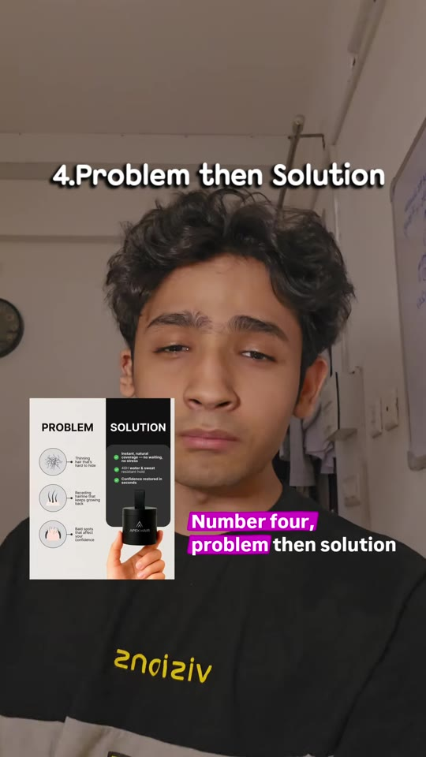
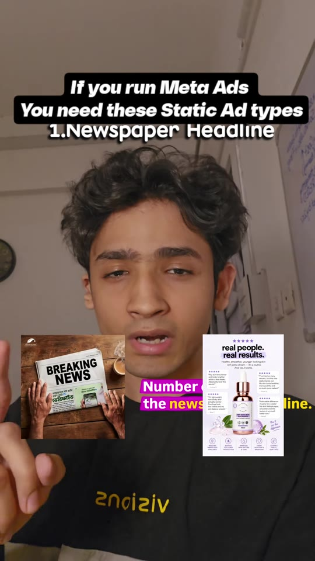
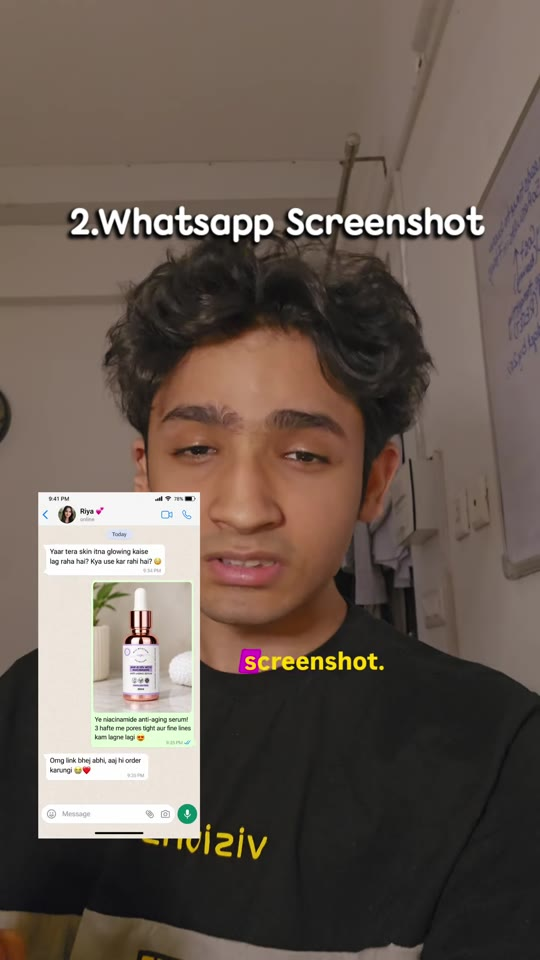
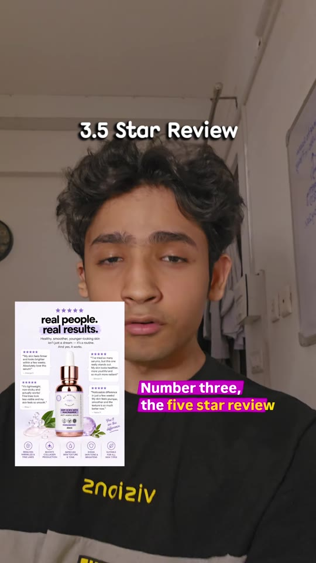
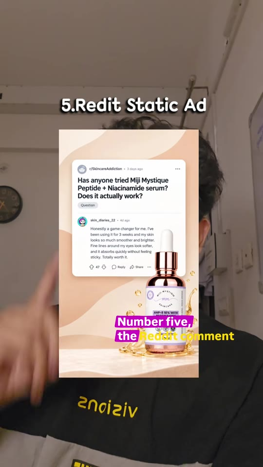

Meta-Ads · Creative-Testing
5 High-Converting Static Meta Ad Formats: Newspaper, WhatsApp, Reviews, Problem-Solution & Reddit
While video creatives often dominate feed testing, static images provide faster load times, lower creative production costs, and high click-through rates (CTR) when engineered around high-trust psychological formats. Details 5 proven static ad formats (Newspaper Headline, WhatsApp Chat Screenshot, 5-Star Review Matrix, Problem-then-Solution Split, and Reddit Thread Mockup) that bypass advertising fatigue.

The 5 Static Ad Creative Archetypes
- Format 1 — The Newspaper Headline:
- Psychology: Borrows journalistic authority and breaking-news visual urgency.
- Layout: Aged newsprint background with bold serif headlines (“BREAKING NEWS: [Industry Breakthrough]”) and a hand holding the physical paper next to a morning coffee cup.
- Function: Elevates product novelty and delivers immediate third-party credibility.
- Format 2 — The WhatsApp Message Screenshot:
- Psychology: The “peeking behind the curtain” sensation of reading an authentic private conversation.
- Layout: An iOS/Android WhatsApp chat bubble exchange where a friend excitedly asks: “Yaar tera skin itna glowing kaise lag raha hai?” paired with an authentic unboxing photo of the product bottle and order link.
- Function: Feels native, non-corporate, and conversational in mobile feeds.
- Format 3 — The 5-Star Review Matrix:
- Psychology: High-density social proof overcoming risk aversion.
- Layout: Header reading “Real people, real results” with 5 yellow star ratings, verified buyer badges, customer testimonial excerpts, and key clinical benefits (e.g. dermatologist approved, vegan, non-toxic).
- Function: Serves as an ideal bottom-of-funnel retargeting and prospecting conversion driver.
- Format 4 — Problem then Solution (2-Column Split):
- Psychology: Direct contrast comparison addressing specific customer symptoms.
- Layout: Left column lists 3–4 customer problems (e.g., hair thinning, receding hairline, flaky scalp); right column presents the exact clinical solutions delivered by the product bottle placed center-right.
- Function: Immediately qualifies the target Ideal Customer Profile (ICP) through symptom recognition.
- Format 5 — The Reddit Comment Section Ad:
- Psychology: Modern consumers distrust polished influencer endorsements and search Reddit for unbiased feedback.
- Layout: Authentic UI card mimicking an
r/SkincareAddictionor niche subreddit thread: post title asking “Has anyone tried [Brand]? Does it actually work?” with a highly detailed, honest top comment outlining the 3-week transformation. - Function: Leverages Reddit's organic trust halo to generate exceptionally high outbound CTR.
Static Creative Gallery




Verbatim Breakdown
| Timestamp | Screen / Source | Verbatim Content |
|---|---|---|
00:00 |
On-screen text | If you run Meta Ads You need these Static Ad types |
00:03 |
Spoken (audio) | “Number one, the newspaper headline. Ye tumhe importance bhi dega aur ye tumhe credibility bhi dega.” |
00:08 |
Spoken (audio) | “Number two, the WhatsApp message screenshot. Isme tum customer ko aisi feeling do ki wo ek private conversation ka part hai.” |
00:14 |
Spoken (audio) | “Number three, the five star review strategy. You will gain the trust of the customer in this static ad.” |
00:19 |
Spoken (audio) | “Number four, problem then solution. Tumhe problem apne ICP ke according define karni hai aur fir use ek solution dena hai.” |
00:26 |
Spoken (audio) | “Number five, the Reddit comment section ad. Log Reddit pe kahi hui baaton ka sabse zyada bharosa karte hain.” |
(caption) |
Post Caption | If you run Meta Ads, these static ad creatives can help improve CTR, attract your ideal audience, boost conversions, and create high-performing Facebook and Instagram ad campaigns. Meta ads, static ads, static ad creatives, Facebook ads, Instagram ads, Meta advertising, high converting ads, Facebook ad creatives, Instagram ad creatives, static ad design, ad creative strategy, Meta ads strategy, conversion ads, performance marketing, digital marketing, paid advertising, Facebook advertising, Instagram marketing, ad design ideas, winning ad creatives |
Design & Creative Rules
- Aspect Ratio: Design static assets in 4:5 (1080×1350) or 1:1 (1080×1080) for feed placements, and 9:16 (1080×1920) for Stories and Reels.
- Font Authenticity: When designing WhatsApp and Reddit formats, use exact system UI typography (San Francisco / Roboto / Segoe UI) and platform-accurate border radiuses and UI colors to maintain native visual authenticity.
- High Legibility: Ensure text covers no more than 30–40% of the image canvas and maintains high contrast against background surfaces to remain readable on mobile screens.
Try This
- Export a Figma/Canva canvas at 1080×1350 for your best-selling product.
- Design a 2-column “Problem vs. Solution” ad featuring 3 specific customer pain symptoms on the left and 3 corresponding product mechanisms on the right.
- Create a second variant mimicking a Reddit thread titled: “Is [Your Product Name] actually worth the hype? Honest review after 30 days” with a 5-star customer review as the top comment.
- Launch both into your Meta creative testing ad set alongside your current video creatives.
Open Questions
- Meta ad policy on simulated UI: Meta occasionally flags ads that simulate clickable interface elements (e.g. fake audio play buttons or un-clickable checkboxes); ensure that chat and forum mockups represent clear social proof rather than misleading clickable UI.